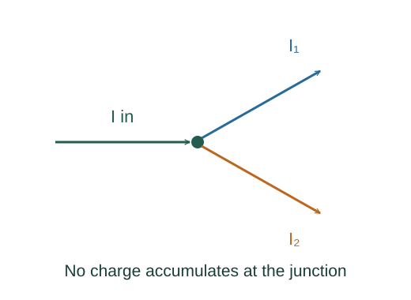

Derive Kirchhoff rules and equivalent resistance
The junction rule is charge conservation for an ideal circuit node. The ordinary loop rule expresses the balance of potential changes around a lumped circuit with no unaccounted changing magnetic flux.
What the symbols mean
I: signed branch currents; R: ideal resistances; ℰ: source emf; ΔV: signed potential change when traversing an element.
When this applies
Lumped, quasisteady circuit model; negligible charge accumulation at ideal nodes. Induced emf must be explicitly included if linked magnetic flux changes.
Developing the argument

Apply conservation at a node
If charge is not building up at a junction, the charge arriving each second equals the charge leaving.
Return to the same potential
Traverse a closed loop and add signed changes. A resistor traversed along the assigned current contributes −IR; an ideal source traversed from minus to plus contributes +ℰ.
Combine resistors in series
The same current passes through each resistor, and voltage drops add. Dividing total drop by current gives the equivalent resistance.
A closer lookWhere does the resistor voltage relation come from? ↗Combine resistors in parallel
Branches share the same voltage, while their currents add. Substitute Ii = ΔV/Ri into the junction rule.
A worked example
A 6 Ω resistor in parallel with 3 Ω has equivalent resistance 2 Ω. At 12 V their branch currents are 2 A and 4 A, totaling 6 A.
Derivation behind this calculation ↗A point to keep straight
A negative solved current means actual flow opposes the assigned arrow. It does not invalidate the chosen equation system.
Check the assumptions and derivation ↗